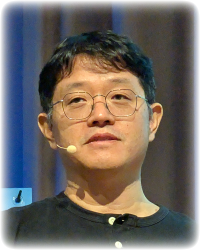

Evolving the LAVD scheduler from gaming to servers
Games and criticality
Min started by saying that this scheduler was initially developed to address stuttering problems in games. Its core concept is urgency — which task most needs to be run next? It tries to infer the urgency of tasks automatically, then uses that calculation to adjust virtual deadlines. More recently, LAVD has grown more complex heuristics to determine which CPU a task should run on, and to minimize the number of active CPUs in the system.

The Linux scheduler tries to optimize average performance but, Min said, that is the wrong target for games (and many other workloads); tail latency matters more. The initial objective was to improve tail latency on Steam Deck devices, which are relatively simple systems with a single CPU type. To do that, the developers focused on determining the urgency of tasks. Later on, LAVD has been adapted to deal with other CPU types (particularly non-heterogeneous systems with CPUs of varying capabilities) and, eventually, to be useful for data-center workloads. At last count, 42 developers had made over 900 commits to the scheduler, which is now about 12,000 lines of code.
Games are generally structured as processing chains, where task A completes some work and notifies B, which then does further work and passes it on to C. Delaying B will thus also delay C. Capturing this "who wakes whom" pattern is at the core of the LAVD design; that is done by maintaining three signals for each task: the wait frequency (how often it sleeps waiting for others), the wake frequency (how often it wakes other tasks), and the average run time. Tasks with shorter average run times, he said, are more vulnerable to delays in the scheduler. From those parameters, the "criticality" of a task is calculated; it is proportional to the product of the wait and wake frequencies divided by the average run time. Later versions of LAVD have added criticality inheritance; a task's urgency can propagate to both the tasks it is blocked on and those that are blocked on it.
Deadlines and CPU selection
Guo took over to discuss some details, starting with the calculation of deadlines for tasks. As with other schedulers, LAVD will run the task with the earliest deadline first. The key point here is that, for each task, the calculation of the time to the next deadline has a final step, where that time is divided by the task's criticality. So, if two tasks are initially assigned the same deadline, but one task is ten times more critical than the other, that task's deadline will be ten times closer. That insures that the most critical tasks will run ahead of the others.
In determining time slices, the scheduler aims to run every task once within a 10ms window, so the default slice is just 10ms multiplied by the number of active CPUs, then divided by the number of running tasks. When the time comes to preempt a task, LAVD looks at the CPUs running within the incoming task's cache domain, and tries to pick the CPU running the lowest-criticality task. There are some qualifiers, though. If the target task is about to finish its time slice anyway, it will not be preempted. Lock holders are also never preempted; the scheduler watches futex() calls to keep a handle on tasks waiting for locks. There are no inter-processor interrupts used to force immediate preemption; instead, the target task's time slice is shortened so that it will naturally yield the CPU at the next scheduling point.
LAVD maintains one dispatch queue per L3 cache domain, so each queue holds tasks that share a cache and will thus run those tasks where they may have cached data. But, Guo said, CPUs should not sit idle while other domains have work waiting to run, so a CPU that runs out of work to do may try to pull tasks from another domain. In general, LAVD's load balancing tries to balance work across CPUs. Rather than balancing by the number of tasks in the run queues, though, it tries to keep the same weight (amount of work being done) on each CPU.
There is more that goes into picking a CPU for a task to run on, though. Some CPUs are deemed to be "turbulent", meaning that it is harder to guarantee deadlines there. CPUs that are handling a lot of interrupts or which are running realtime tasks can fall into that category. LAVD, when placing a high-criticality task, will try to pick a "steady" CPU, avoiding the turbulent ones if possible.
A related question is when an idle CPU should be brought back up to run a task. Placing tasks on idle CPUs is good for work conservation (maximizing the amount of throughput a system can create) but it can also create poor cache behavior, hurting performance. LAVD tracks the amount of time a task has been running on a given CPU, and uses that to calculate a cache "warmness" value; that value decays when the task is out of the CPU. The warmness is used to decide whether the benefit of moving a task to a new CPU outweighs the cost.
Task spreading
Min returned to discuss a related topic: how many CPUs should the scheduler keep busy at any given time? Spreading tasks maximally to use all CPUs can actually hurt performance; cores that are not heavily used will sit in low-power states, and often move between power states as tasks come and go, resulting in the unfortunate combination of low performance and high power consumption. It is better, he said, to use fewer CPUs and let the rest of them sleep.
To that end, LAVD analyzes the data in the kernel's energy model (which describes how much work each CPU can do at each of its supported power levels) on startup and builds a table indicating which CPUs should be used at each level of load. When the system is running, the scheduler just has to calculate the total utilization and use that to look up which CPUs it should be placing tasks on. One other heuristic is to calculate the "performance criticality" of each task, which is a function of its latency criticality and overall CPU use. Tasks with a high performance criticality are preferentially placed on the larger (faster) CPUs.
Finally, there is ongoing work to integrate LAVD with control groups to allow the system administrator to place limits on CPU usage. There is a new library (called scx_cgroup) that provides control-group support for custom schedulers. The goal is to make this enforcement cheap, so the model chosen is "eventual enforcement"; no group is throttled during a single enforcement period. Instead, the objective is to make the averages balance out over the longer term. Among other things, that allows the relatively expensive usage accounting to happen outside of the critical scheduler paths.
In closing, Min said that the LAVD scheduler has evolved from its original use case for gaming into supporting workloads on server fleets; Meta is exploring its use internally. For the future, there is interest in better supporting AI workloads, which are often more concerned about GPU scheduling than CPU scheduling. In the meantime, though, LAVD has proved to be useful in a number of situations; its core critical-path heuristic was never specific to gaming.
An audience member asked whether any of the ideas developed in LAVD would eventually be contributed back to the kernel's EEVDF scheduler; Min answered that those ideas are still being stabilized, but that an attempt will eventually be made to upstream some of them.
The video of this talk is available on YouTube.
[Thanks to the Linux Foundation, LWN's travel sponsor, for supporting my
travel to this event.]
| Index entries for this article | |
|---|---|
| Kernel | Scheduler/Extensible scheduler class |
| Conference | Kernel Recipes/2026 |